This page describes the full environment used for the SOC L2 lab, including virtual machines, network layout, tools, and configurations.
A homelab for learning and practising SOC L2 work, simulating attacks and performing analysis using Blue Team tools.
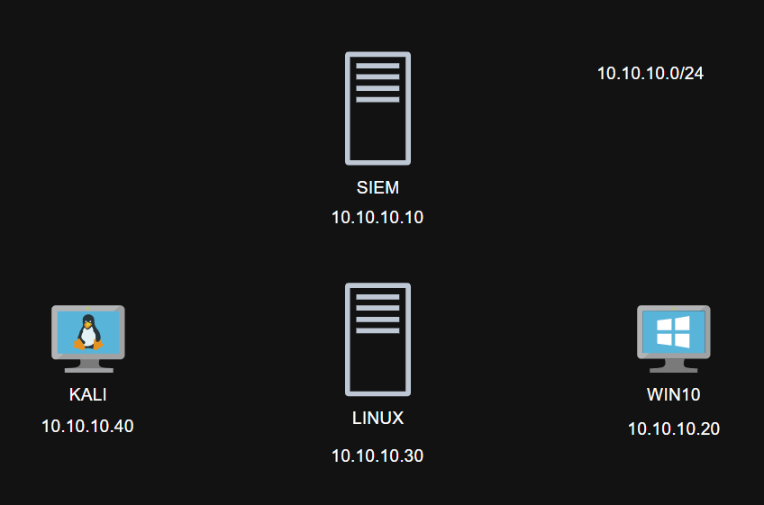
Four VMs in VirtualBox 7.0: SIEM/IR platform, Kali Linux, Windows 10, and a Linux Web Server.
Each VM uses two network adapters: NAT (Internet) and Host‑Only (internal SOC network 10.10.10.0/24). Port‑forwarding is configured via VirtualBox Manager as needed.
| VM Name | Role | OS | RAM | CPU | Disk | IP (host‑only) |
|---|---|---|---|---|---|---|
| SIEM | Wazuh + DFIR‑IRIS | Ubuntu Server 22.04 | 6 GB | 2 | 40 GB | 10.10.10.10 |
| WIN10 | Monitored workstation | Windows 10 | 4 GB | 2 | 20 GB | 10.10.10.20 |
| LINUX | Monitored Linux host | Ubuntu Server 22.04 | 1 GB | 1 | 20 GB | 10.10.10.30 |
| KALI | Attack box | Kali Linux | 2 GB | 1 | 15 GB | 10.10.10.40 |
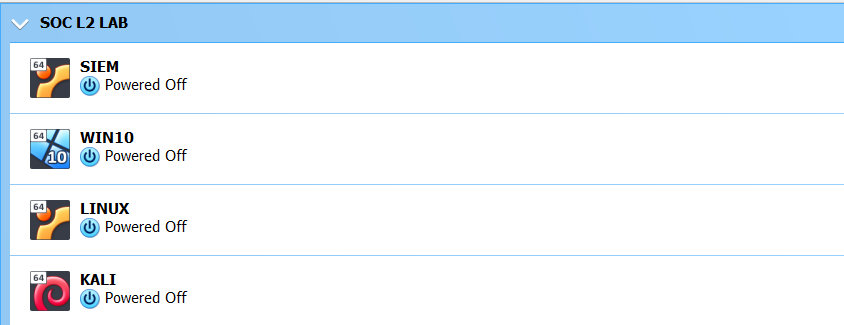
VirtualBox Host‑Only adapter configuration. DHCP server disabled.
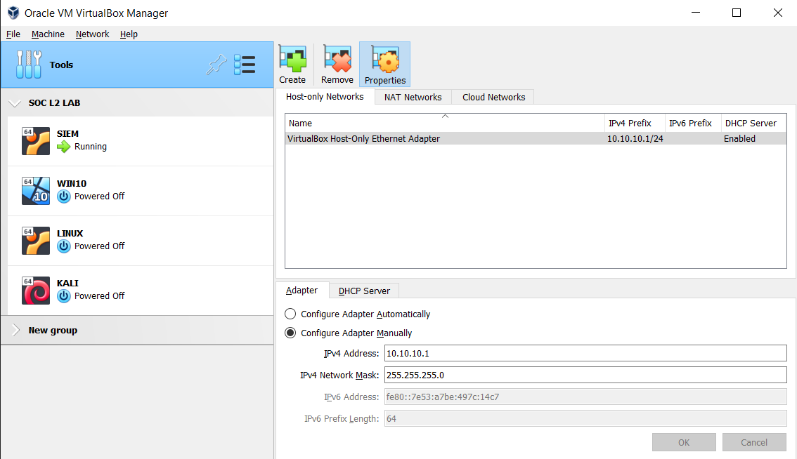
Static IP configuration (/etc/network/interfaces):
auto lo
iface lo inet loopback
allow-hotplug enp0s3
iface enp0s3 inet dhcp
metric 10
allow-hotplug enp0s8
iface enp0s8 inet static
address 10.10.10.10
netmask 255.255.255.0
gateway 10.10.10.1
metric 20
Commands:
apt install ifupdown net-tools
apt remove --purge netplan.io
ifup enp0s8
systemctl disable ifupdown-wait-online.service
systemctl mask ifupdown-wait-online.service
systemctl stop systemd-networkd
systemctl disable systemd-networkd
systemctl mask systemd-networkd
systemctl mask systemd-networkd-wait-online.service
Wazuh Manager installation:
curl -sO https://packages.wazuh.com/4.14/wazuh-install.sh && sudo bash ./wazuh-install.sh -a
# Disable Wazuh updates
sed -i "s/^deb /#deb /" /etc/apt/sources.list.d/wazuh.list
apt update
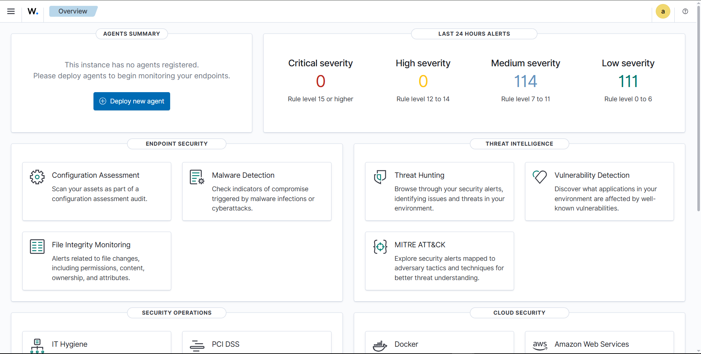
Configure Manager to see all logs, Filebeat archives, and index patterns:
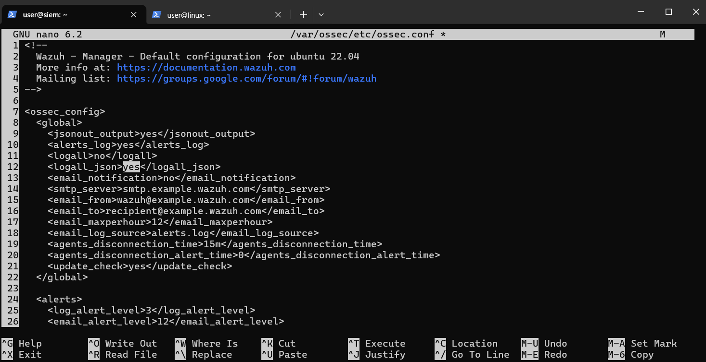
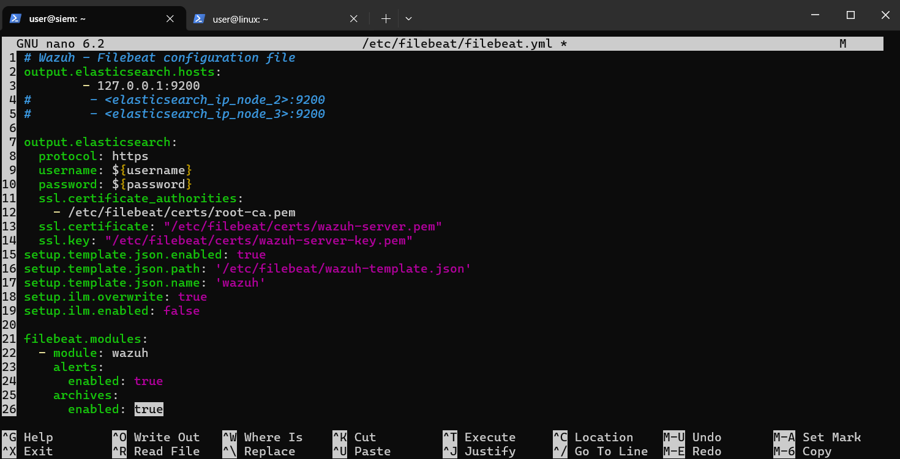
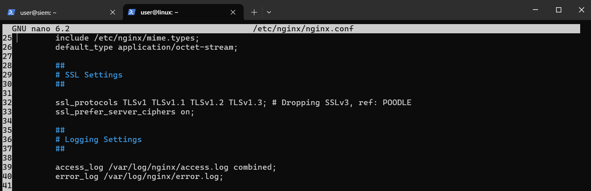
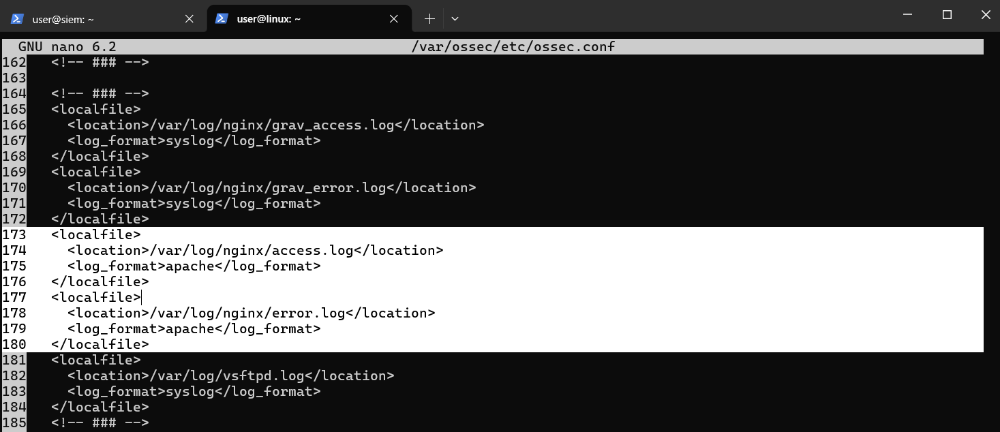
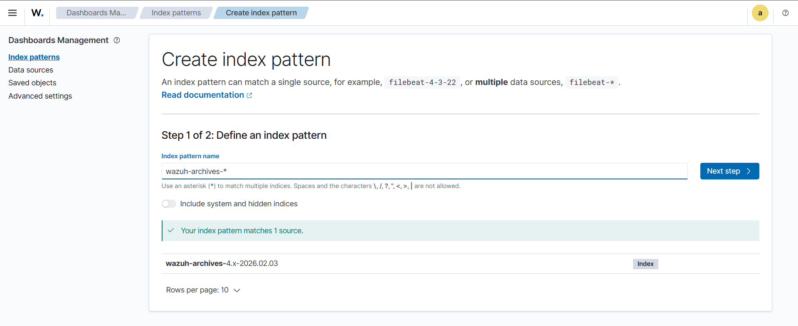
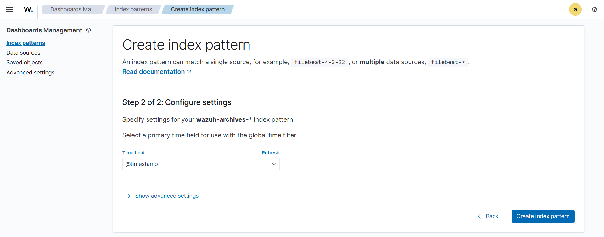
cd /opt
git clone https://github.com/dfir-iris/iris-web.git
cd iris-web
git checkout v2.4.20
cp .env.model .env
apt install docker docker-compose
DOCKER_CONFIG=${DOCKER_CONFIG:-$HOME/.docker}
mkdir -p $DOCKER_CONFIG/cli-plugins
curl -SL https://github.com/docker/compose/releases/download/v5.0.1/docker-compose-linux-x86_64 -o $DOCKER_CONFIG/cli-plugins/docker-compose
chmod +x $DOCKER_CONFIG/cli-plugins/docker-compose
docker compose pull
docker compose up
docker compose logs app | grep 'administrator'
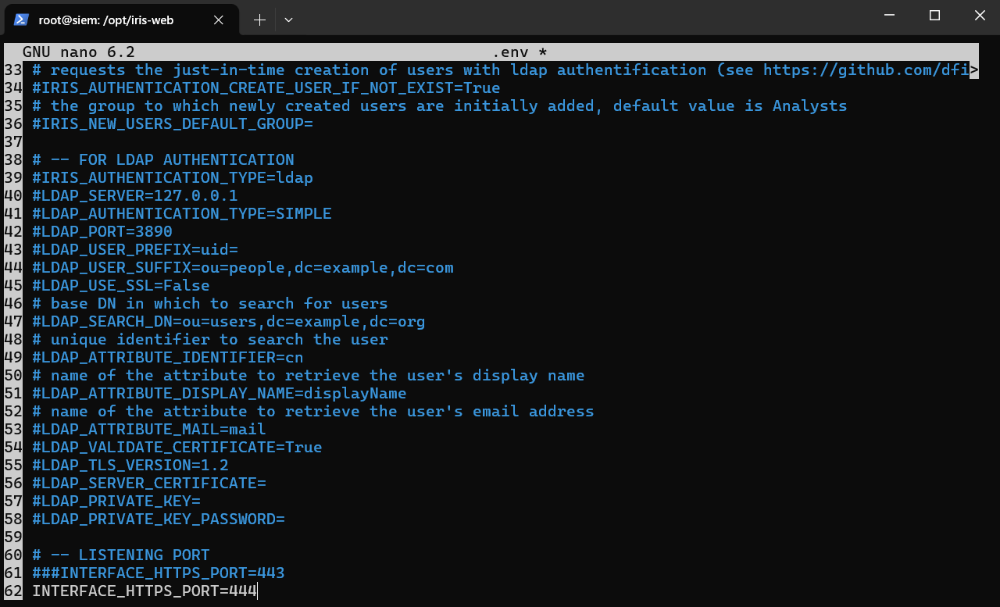
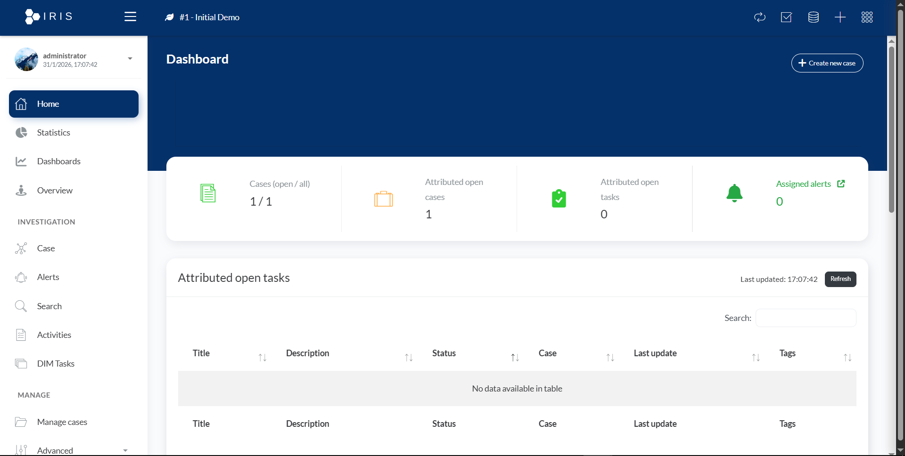
Static IP configuration:
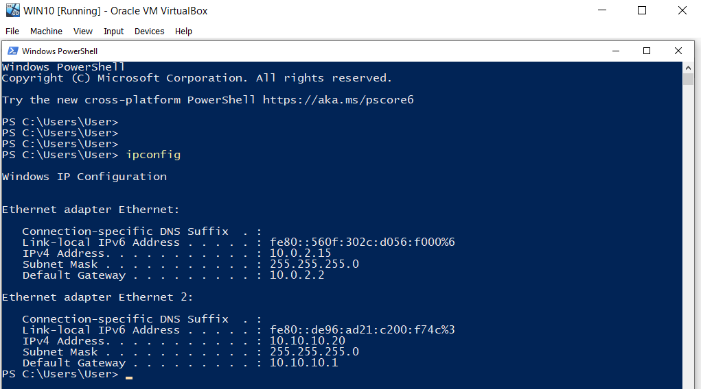
Sysmon installation and configuration:
https://download.sysinternals.com/files/Sysmon.zip
https://github.com/SwiftOnSecurity/sysmon-config/blob/master/sysmonconfig-export.xml
cd C:\Users\User\Downloads
.\sysmon64.exe -accepteula -i sysmonconfig-export.xml
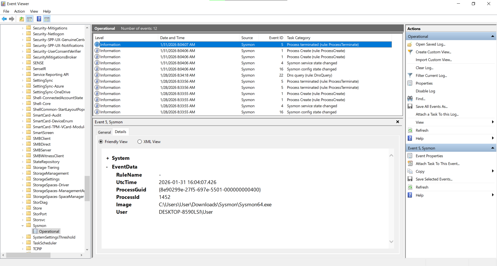
Wazuh Agent deployed:
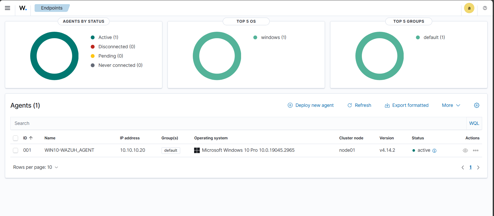
Wazuh Agent configuration (C:\Program Files (x86)\ossec-agent\ossec.conf):
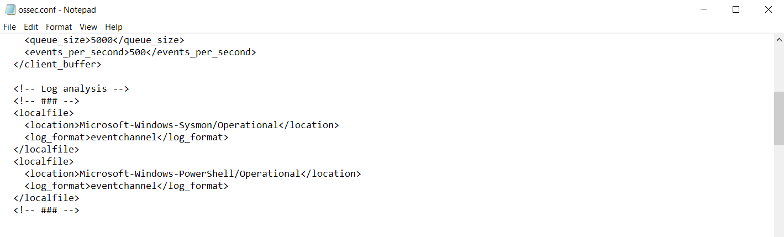
Restart-Service Wazuh
PowerShell logging:
gpedit.msc
Computer Configuration
→ Administrative Templates
→ Windows Components
Enable:
- Turn on PowerShell Script Block Logging
- Turn on PowerShell Module Logging (*, all)
- Turn on PowerShell Transcription (C:\PSLogs)
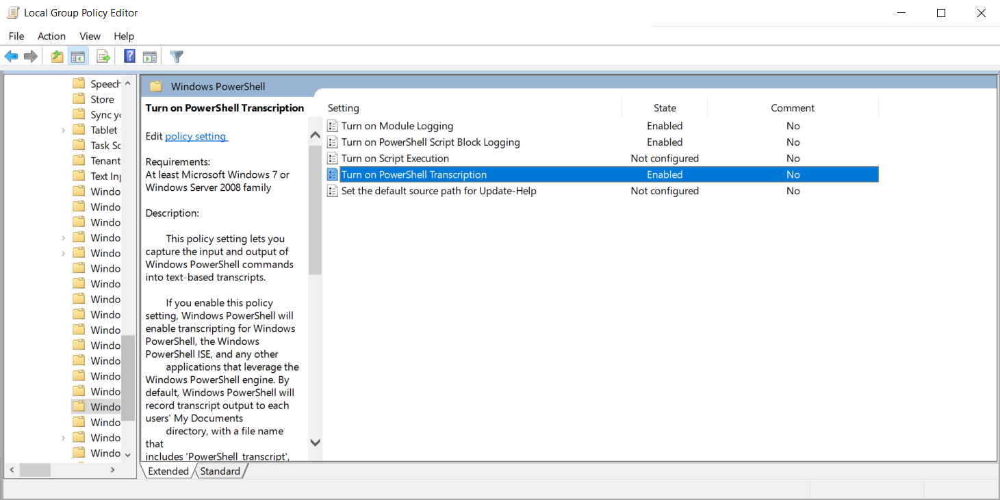
Audit policies:
secpol.msc
Security Settings
→ Advanced Audit Policy Configuration
→ System Audit Policies
Account Logon → Success, Failure
Account Management → Success, Failure
Logon/Logoff → Success, Failure
Audit Special Logon → Success
Object Access → Success, Failure
Policy Change → Success
Privilege Use → Success, Failure
Process Creation → Success
gpupdate /force
Checking Wazuh Agent sending logs:
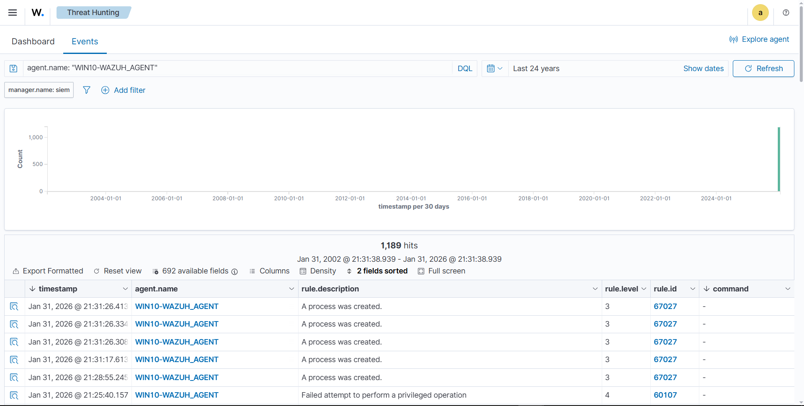
Static IP configuration (/etc/network/interfaces):
auto lo
iface lo inet loopback
allow-hotplug enp0s3
iface enp0s3 inet dhcp
metric 10
allow-hotplug enp0s8
iface enp0s8 inet static
address 10.10.10.30
netmask 255.255.255.0
gateway 10.10.10.1
metric 20
Commands:
apt install ifupdown net-tools
apt remove --purge netplan.io
ifup enp0s8
systemctl disable ifupdown-wait-online.service
systemctl mask ifupdown-wait-online.service
systemctl stop systemd-networkd
systemctl disable systemd-networkd
systemctl mask systemd-networkd
systemctl mask systemd-networkd-wait-online.service
Wazuh Agent installation:
wget https://packages.wazuh.com/4.x/apt/pool/main/w/wazuh-agent/wazuh-agent_4.14.2-1_amd64.deb
sudo WAZUH_MANAGER='10.10.10.10' WAZUH_AGENT_NAME='LINUX-WAZUH_AGENT' dpkg -i ./wazuh-agent_4.14.2-1_amd64.deb
sudo systemctl daemon-reload
sudo systemctl enable wazuh-agent
sudo systemctl start wazuh-agent
auditd rules:
apt install auditd audispd-plugins
systemctl enable --now auditd
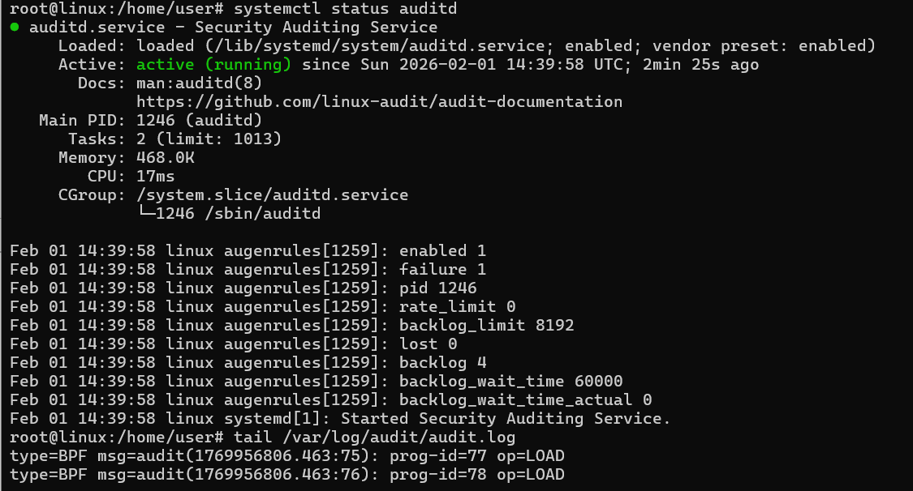
rsyslog:
sudo apt install rsyslog
sudo systemctl enable --now rsyslog
FIM configuration (/var/ossec/etc/ossec.conf):
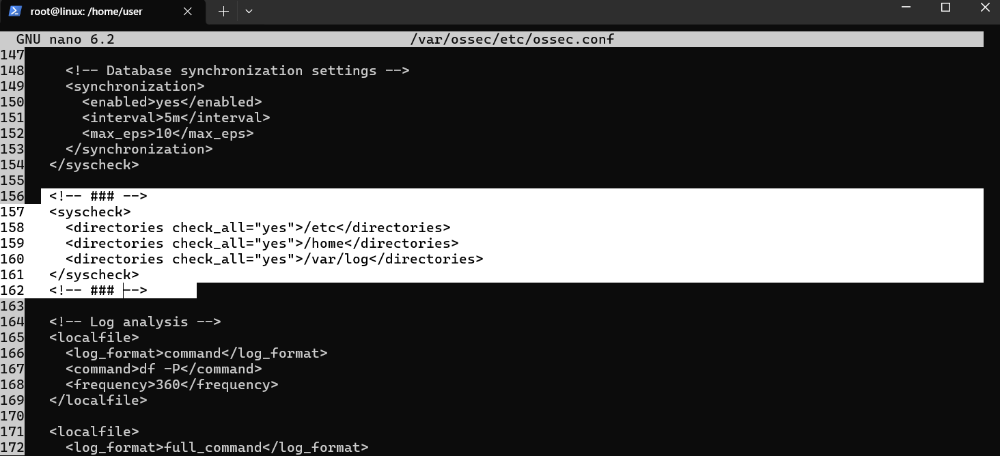
Checking Wazuh Agent sending logs:
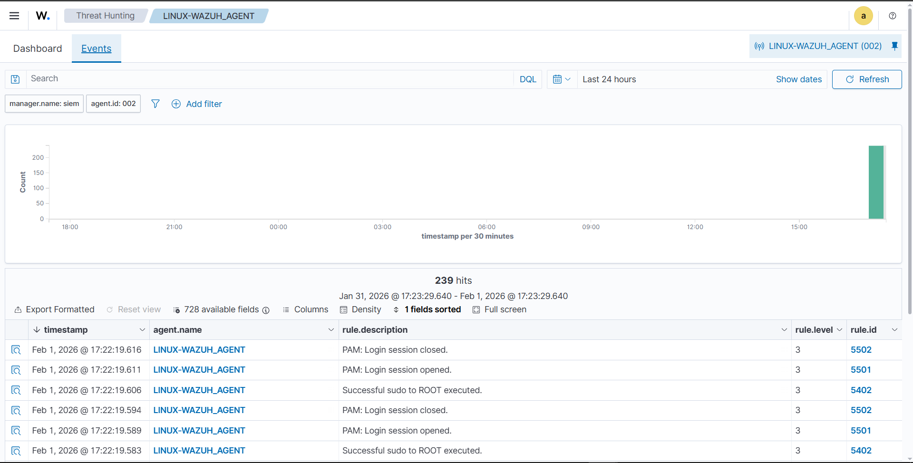
Service configuration (Nginx + GravCMS, FTP) and agent configuration:
sudo apt update
sudo apt install -y nginx php php-fpm php-zip php-yaml php-gd php-curl php-mbstring unzip
sudo apt install php-dom php-simplexml php-xml
cd /var/www
sudo wget https://getgrav.org/download/core/grav-admin/latest -O grav.zip
sudo unzip grav.zip -d grav
sudo chown -R www-data:www-data grav
sudo nano /etc/nginx/sites-available/grav
server {
listen 80;
server_name 10.10.10.30;
root /var/www/grav;
index index.php;
location / {
try_files $uri $uri/ /index.php?$query_string;
}
location ~ \.php$ {
include snippets/fastcgi-php.conf;
fastcgi_pass unix:/run/php/php8.1-fpm.sock;
}
access_log /var/log/nginx/grav_access.log;
error_log /var/log/nginx/grav_error.log;
}
sudo ln -s /etc/nginx/sites-available/grav /etc/nginx/sites-enabled/
sudo nginx -t
sudo mv /var/www/grav/grav-admin/* /var/www/grav/
sudo mv /var/www/grav/grav-admin/.* /var/www/grav/ 2>/dev/null
sudo rmdir /var/www/grav/grav-admin
sudo chown -R www-data:www-data /var/www/grav
sudo chmod -R 755 /var/www/grav
sudo systemctl restart php8.1-fpm
sudo systemctl restart nginx
sudo systemctl restart wazuh-agent
# vsftpd
sudo apt update && sudo apt install vsftpd -y
# Weak user
sudo useradd -m testuser
sudo passwd testuser
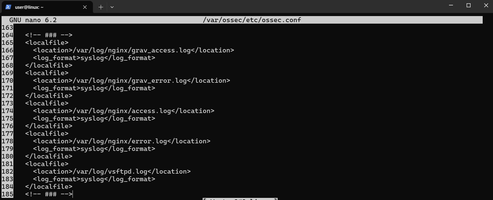
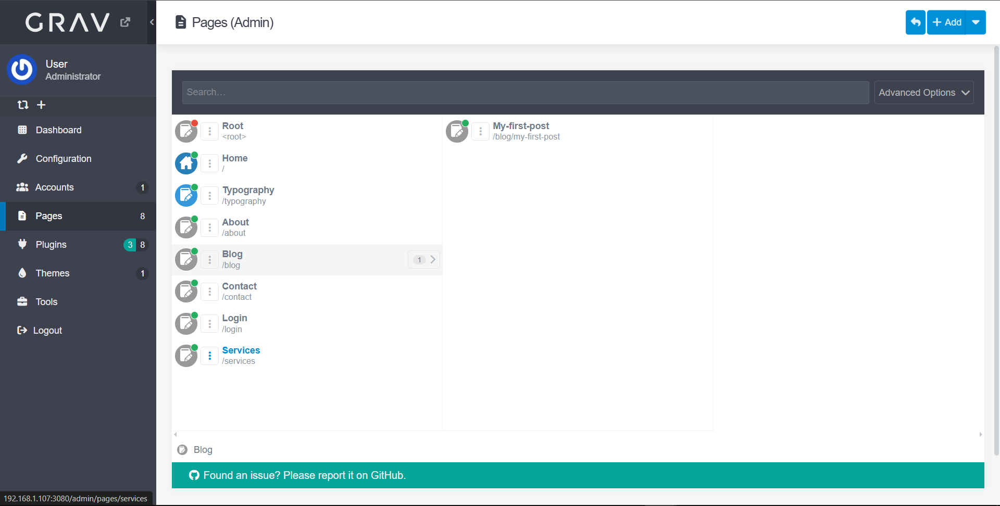
Static IP configuration:
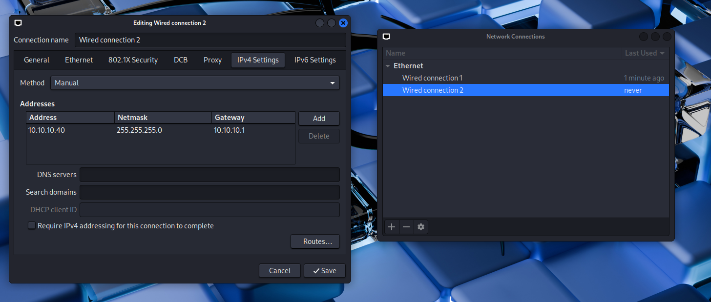
Connectivity tests:
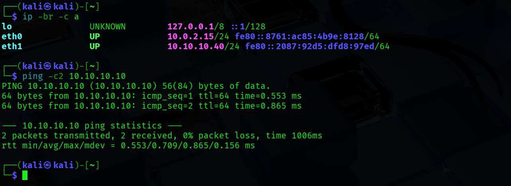